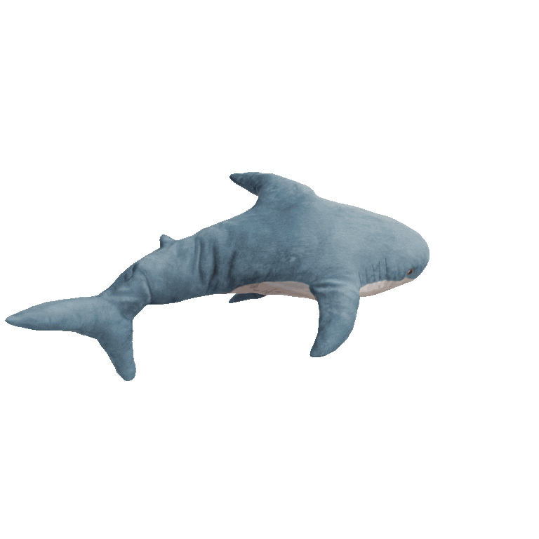

Welkom op mijn portfolio website!!
Gemaakt door Tamara de Kleijn
Gemaakt door Tamara de Kleijn
Zoals u kunt zien is dit mijn pagina die ik zelf in elkaar heb gezet. Deze site is gemaakt voor het schoolproject van periode 4 front-end development.
Hier op deze website zal u mijn portfolio goed kunnen bekijken en begrijpen! De website zal onder anderen informatie over mezelf hebben en de project waar ik aan gewerkt heb.
Deze opdrachten, projecten en dergelijk zullen beschreven en toegelicht worden op de pagina als dat nodig is natuurlijk.
Mijn naam is Tamara de Kleijn en deze naam heeft nooit op mijn geboorteakte gestaan. Ik heb deze naam zelf gekozen omdat mijn vorige naam niet paste bij wie ik ben. Waarom ik deze naam gekozen heb is vrij simpel, ik zou liever niet willen opgroeien tot man maar liever opgroeien tot vrouw.
Maar er is meer van mij dan alleen dat natuurlijk. Voornamelijk natuurlijk dat ik aan software development doe, waarin wij code schrijven voor projecten en opdrachten.
Zelf doe ik graag buiten school aan Warhammer 40000, dit is een strategisch oorlogsspel waarin je met een leger van plastic soldaten tegen andere legers van andere spelers speelt. Deze hebben veel variate qua factie keuzes.
Ik zelf doe deze hobby voor al ongeveer 3 jaar tijdens het schrijven van dit stuk, hierin heb ik VEEL te veel al uitgegeven hieraan.
Persoonlijk weet ik niet echt hoe veel meer ik over me zelf moet vertellen om eerlijk te zijn.
Natuurlijk heb ik ook te veel tijd aan videogames besteed, hell zelfs de achtergrond die je nu ziet komt uit een van mijn favourite RPG's. Voornamelijk speel ik RPG's en FPS games in mijn vrije tijd
Mijn school projecten zijn meerindeels veel gemaakt met Javascript, PhP en HTML. Met deze code heb ik databases opgezet en websitejes gemaakt.
Met de projecten leren we hoe we databases moeten maken, programma's moeten schrijven en dergelijks. Zoals laats waar we een weerpagina moesten maken die automatisch bij houd welk weer het is in verschillende landen. Of hoe we een keer een escaperoom gemaakt hadden
Dit schooljaar hebben we veel van dit soort dingen geprogrammeerd maar in het volgende jaar zullen we dingen zoals Python gaan uitvoeren. Zelf heb ik nog geen idee wat dat precies zal inhouden, in iedergeval ben ik er wel heel erg benieuwd naar om uit te vinden wat het precies is.
Deze opleiding doe ik nu al een jaar en zal nog twee jaar hierna duren. Ik ben heel erg benieuwd hoe het zal eindigen en wat ik er mee zal leren!
Ik heb vroeger 1 jaar bij de readshop in rozenburg gewerkt als algemene medewerker. Met deze baan deed ik de balie, kassa, tabak, post, loterij, schoonmaak en vakkenvullen.
Hierna ben ik gaan werken bij de wibra dichtbij mij nadat de readshop in rozenburg was failiet gegaan was 2 jaar geleden. Niet dat deze baan lang vol hield omdat ik niet door de proeftijd heen kwam helaas.
Helaas, ben ik op het huidige moment werkloos.
Blahaj is een symbolisch icoon voor transgender vrouwen vanwege de blauwe buitenkant en de roze binnenkant. Maar natuurlijk omdat ze schattig en geweldig zijn! :3
